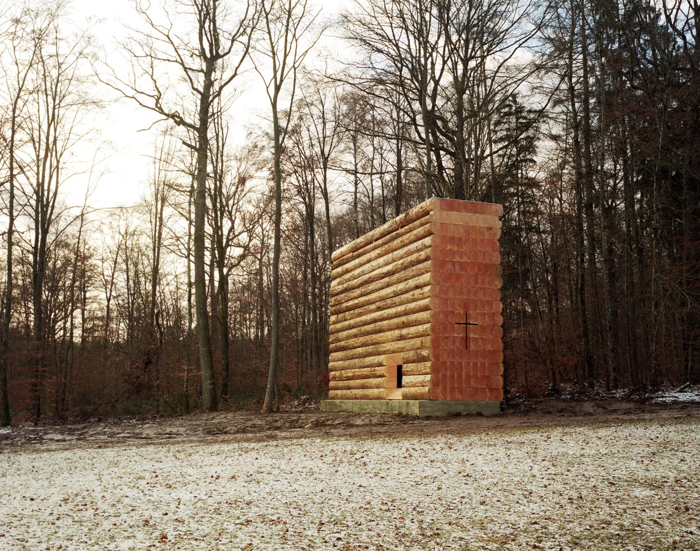
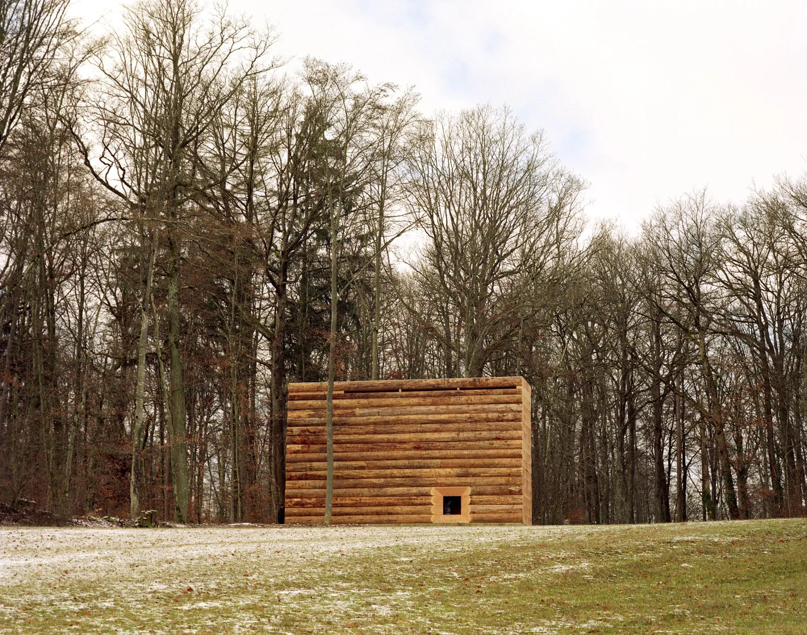
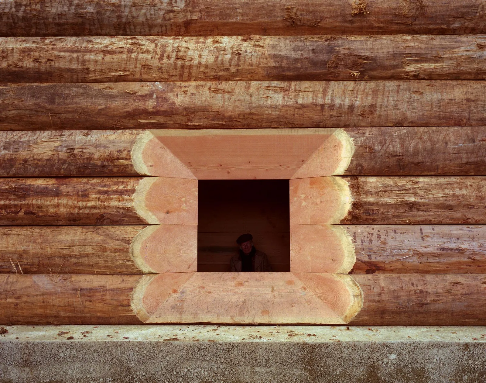
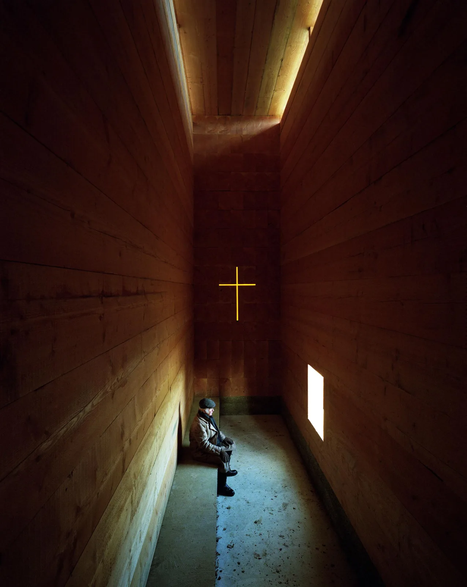
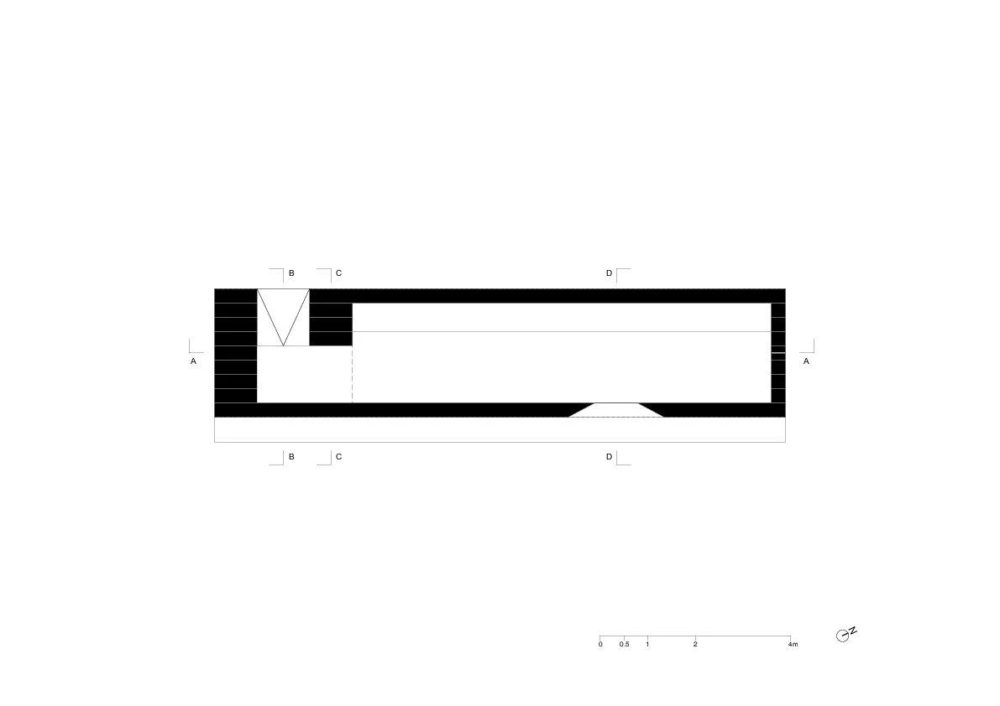
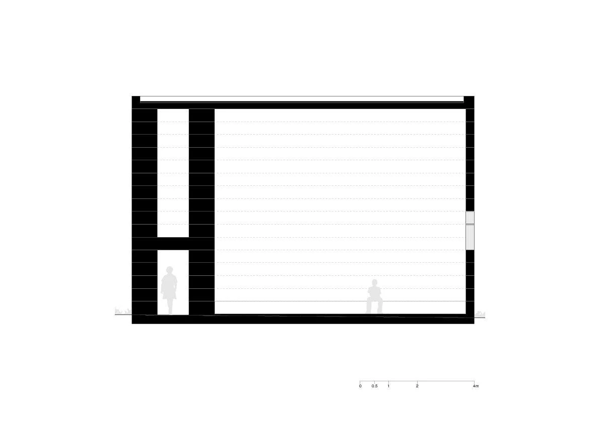
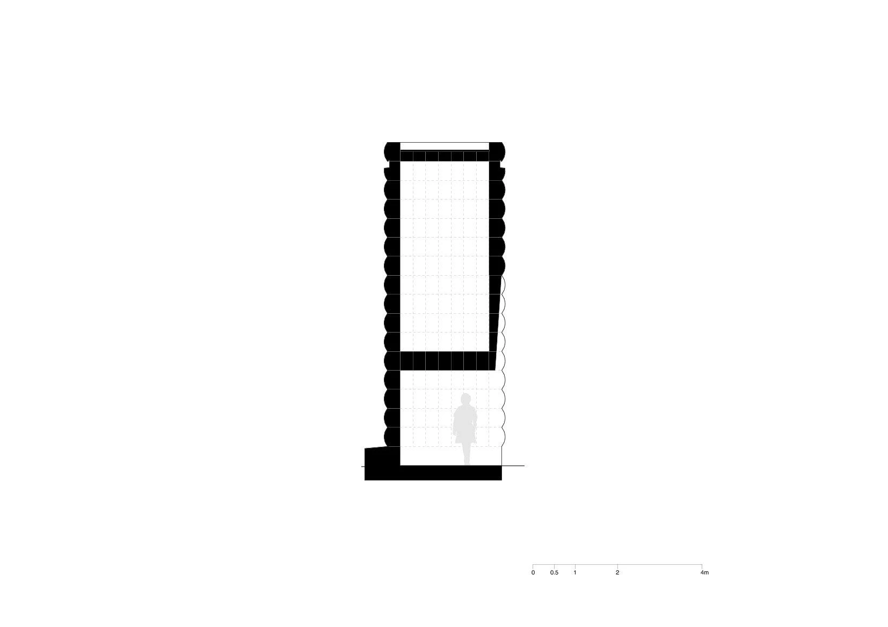

Chapel · 2018
Wooden Chapel
John Pawson
Unterliezheim, Germany
The chapel offers an enclosed place for quiet contemplation beside a woodland path. The close entrance and elongated interior shift the visitor's experience from moving through trees to pausing within a single room.
Its stacked timber mass can read as logs drying in the landscape or as a carefully placed sculpture. Pawson keeps the entrance deliberately narrow before releasing the visitor into an interior more than seven metres high, giving a simple volume a strong bodily sequence.


Relevant connections
Images and drawings / 07











